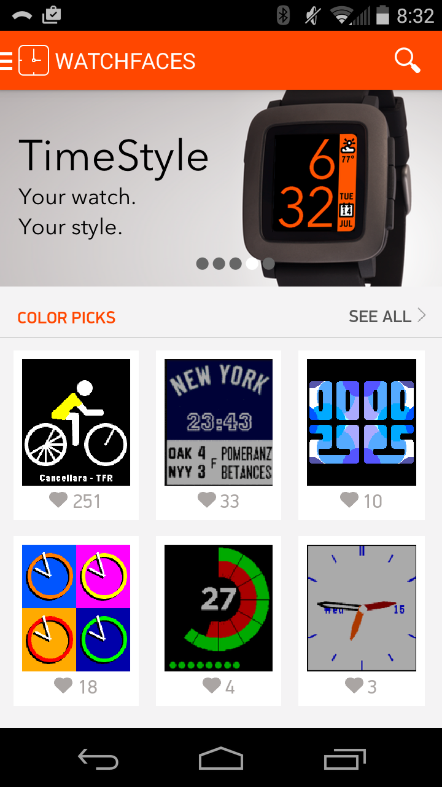

Your new default watchface
Designed to blend perfectly with the aesthetic defined by the Pebble watch's "timeline" interface, TimeStyle offers
unprecedented style and customizability.
In addition, unlike almost all other Pebble digital watchfaces, the time is displayed using antialiasing.
Your watch. Your style.
Select from over 20 preset color schemes, or mix and match any of the 64 colors the Pebble Time can display.
Many features are included by request, including an optional battery meter and support for 10 different languages!
Designing TimeStyle
When I got a Pebble Time watch,
I found that, among all the various watchfaces available,
none of them really matched the rest of the watch's aesthetic: the timeline.
The “timeline” is a UI introduced for the Pebble Time that visualizes past and future events,
called “pins”, with the watch's face serving as the present.
Pins can include weather, alarms, and calendar events:
 While the current watchface serves to visualize the present, no watchfaces available looked
anything like the timeline; I felt that an ideal watchface should feel like part of the timeline.
To elaborate, I wanted my watchface to be:
While the current watchface serves to visualize the present, no watchfaces available looked
anything like the timeline; I felt that an ideal watchface should feel like part of the timeline.
To elaborate, I wanted my watchface to be:
Consistent:
Match the Pebble Time's design language as closely as possible
Readable:
The time should be large enough to be readable in even low-light conditions
Stylish:
Given that a watch is something you wear, it should look nice
Informative:
Like the timeline, I wanted to include about the present, including the weather day, month, and date.
Evolution
 A very early simple digital mockup, which I felt wasn't using space effectively.
A very early simple digital mockup, which I felt wasn't using space effectively.
 Exploring an analog-digital look, based on early graphics from the kickstarter.
Exploring an analog-digital look, based on early graphics from the kickstarter.
 A text-heavy concept based on the “cards” ui guidelines, featuring the weather.
A text-heavy concept based on the “cards” ui guidelines, featuring the weather.
 Finally, this concept explores the idea of using large font aligned against a sidebar.
Finally, this concept explores the idea of using large font aligned against a sidebar.
Building upon this last concept, I switched to a thinner font and dropped the AM/PM indication. I composited
this element into an official press photo of the Pebble Time, and posted this mockup to
Dribbble
and Reddit:
On Reddit, the response was extremely positive, with the mockup becoming one of the 25 most highly voted posts of all time on r/pebble.)
However, with this popularity came something I didn't anticipate -- customization requests!
I had people asking for all different colors schemes, the ability to build custom themes, the ability to show battery life, and tons of other features. I didn't want to let them down -- after all, I wanted to take advantge of the crazy response I had gotten. However, adding the level of customization required would prove challenging to implement.
Implementation

A key challenge in building this face was antialiasing the digits. While the Pebble Time's screen is technically capable of displaying text with AA (it has 64 colors), the software will only ever render text with jagged edges. This results in essentially every digital watchface having unpleasantly pixellated text. Early on, I decided that I wanted to include text-AA, and had planned to just bake it in by using pre-rendered digits. However, that was thrown into question with all the requests for customizability -- how could I use images for the text if the background color and text color were customizable?
The answer, it turned out, was by using palette swapping to dynamically alter the images in memory. Each digit image has four colors: white (the background), black (the foreground), and two intermediate shades of grey. On the watch itself, TimeStyle swaps white with the user's chosen background color, swaps black with the user's chosen foreground color, and averages the R, G, and B components of each color to determine the two closest intermediate colors that the Pebble Time's display can show.
Release

My efforts to satisfy potential user requests proved worthwhile -- as of only two weeks
following its release, it had already garnered over 850 "hearts" and more than 10,000 installations, placing it among the most popular color watch faces of all time!
Maybe include something from twitter?